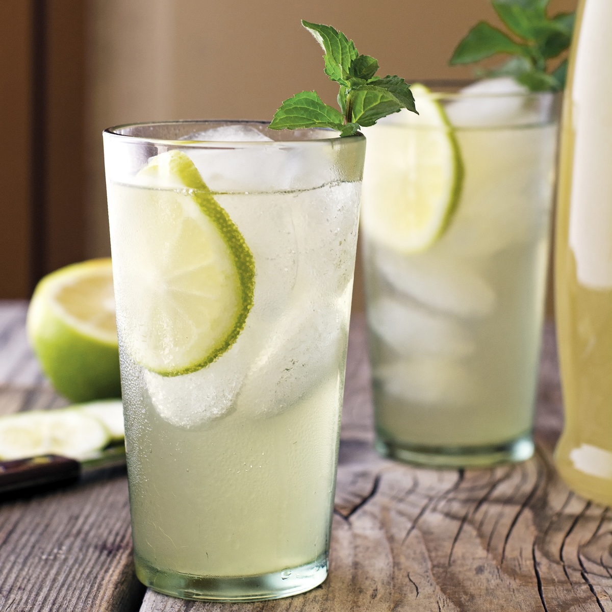
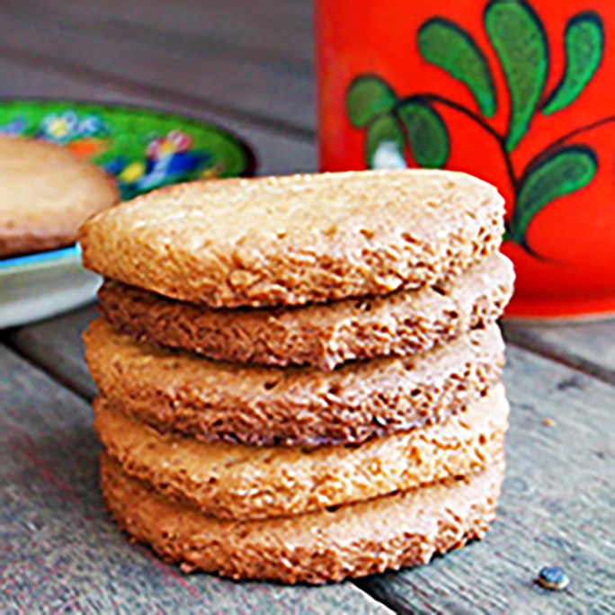
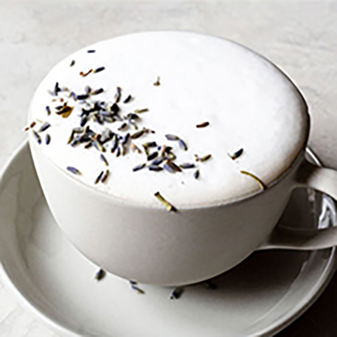

-
Tea Recipes

- Hot Teas
- Iced Teas
- Tea Biscuits
- Fall Favorites
Tea Biscuits

Fall Favorites

How to Slow Your Life
BY ERIN | 10.07.2019
Two years ago, on a brightly lit stage in West L.A., Maria Shriver asks me this:
But how? How do you do it? What would you tell someone who wants to slow their life, but can’t? Who feels totally buried already?
I pause, blink at the lights. I say something about how there’s no easy formula, how it’s different for everyone, but how we can start by simply paying attention. Get off the phone. Breathe. Survey our lives, look for triggers, invite
passion into the day.
But of course there’s more.
I’m a firm believer that living slowly is possible in any season. It takes practice, of course, to see past the mechanics of it all – to peer at your current circumstances and call the whole lot of a gift.
It takes practice to remind yourself that perfection is not just around the corner, that arrivals do not exist, that a better set of circumstances do not necessarily lead to a better life.